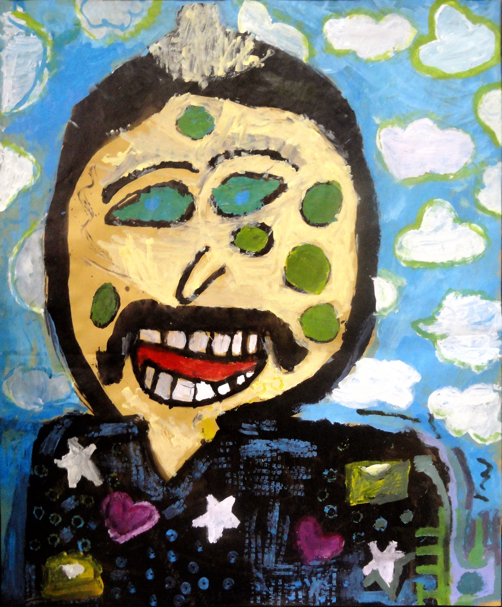
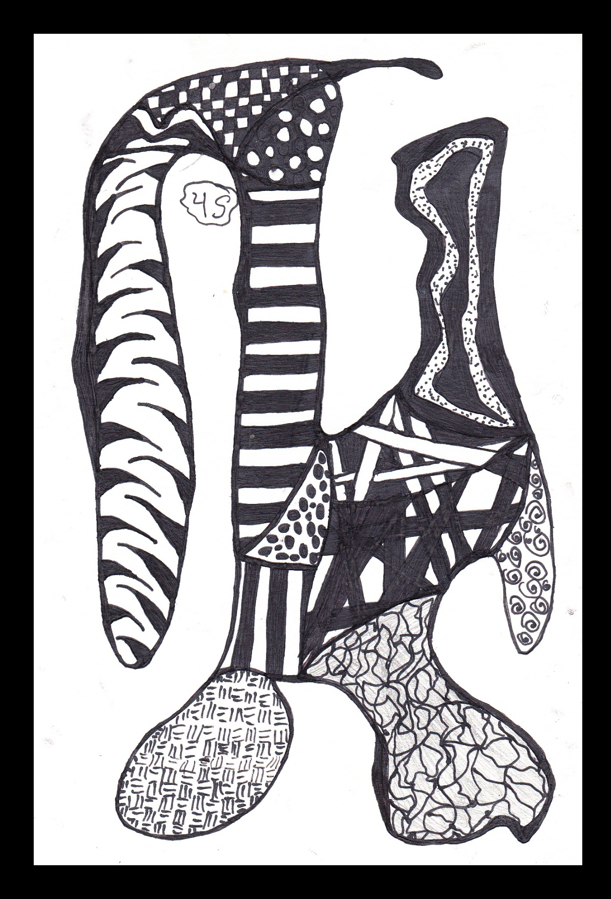

Une méthode accessible
Imaginée par Rick Roberts et Maria Thomas, la méthode Zentangle organise des traits simples en motifs répétitifs, appelés tangles. L’œuvre se découvre progressivement, sans modèle final imposé.
Du Zentangle aux grandes peintures collectives. Une pédagogie de la confiance, de la patience et de la créativité.
Soran Ahmed · Enseignant d’arts plastiques · Souleimaniyeh


Enseignant d’arts plastiques, illustrateur senior et auteur.
Expertise pédagogique : Plus de 13 ans d’expérience dans l’enseignement des arts visuels auprès des enfants de 3 à 16 ans en Irak.
Ancrage local : Animateur et éducateur pour l’Eurométropole de Strasbourg (2023–2024).
Rayonnement culturel : Auteur et illustrateur de plus de 20 livres jeunesse publiés à l’international ; exposant au festival Artistes à Suivre (Aude) avec 50 œuvres Zentangle et à la Manufacture Royale de Bains.
Compétences numériques : Fondateur du studio Wow in Design, maîtrise des outils Adobe et de l’IA générative.
Diplômes : Diplôme de formation des enseignants du primaire, spécialité langue kurde, obtenu en 1995 au Kurdistan irakien ; attestation de comparabilité ENIC-NARIC France, niveau 5. Formation pédagogique pluridisciplinaire comprenant la didactique des arts.
Imaginée par Rick Roberts et Maria Thomas, la méthode Zentangle organise des traits simples en motifs répétitifs, appelés tangles. L’œuvre se découvre progressivement, sans modèle final imposé.
Un dessin complexe peut naître de quelques gestes élémentaires. Chaque trait demande de l’attention ; les variations, les espaces vides et les contrastes construisent une composition personnelle.
Le carré de papier, la bordure et la « ficelle » offrent des limites rassurantes. Elles permettent d’expérimenter sans devoir représenter fidèlement un objet ou un personnage.
La méthode privilégie l’exploration, la concentration et l’accueil des résultats inattendus plutôt que la recherche d’un dessin parfait.
Un carré de papier, un crayon, un stylo noir fin et, si souhaité, une estompe suffisent. Dans mes classes, les supports étaient souvent des carrés de 10 × 10 cm.
Placer quatre points, les relier en une bordure légère, tracer une « ficelle » pour répartir l’espace, puis remplir les zones de motifs répétés.
Alterner lignes, spirales, damiers et formes organiques ; utiliser le contraste noir-blanc et l’ombrage pour suggérer profondeur et relief.
Une séance de 30 à 40 minutes permettait de pratiquer, comparer les démarches et valoriser les recherches individuelles, sans classer les enfants selon une prétendue aptitude naturelle.
Le tracé minutieux invite à coordonner le regard et la main, à ajuster le rythme et à rester attentif aux formes produites.
Une ligne inattendue peut devenir le point de départ d’un nouveau motif. L’enfant apprend à transformer une difficulté plutôt qu’à abandonner son travail.
La répétition de gestes accessibles donne à chacun une porte d’entrée dans la création. L’élève peut découvrir progressivement ses propres solutions visuelles.
Le Zentangle peut constituer un support d’attention, de détente et de créativité. Les observations en classe ne démontrent pas, à elles seules, un effet thérapeutique.